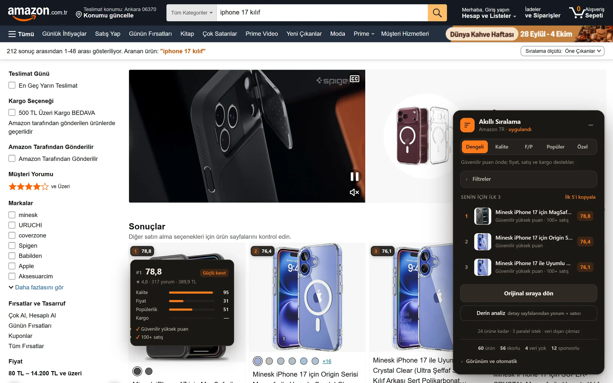
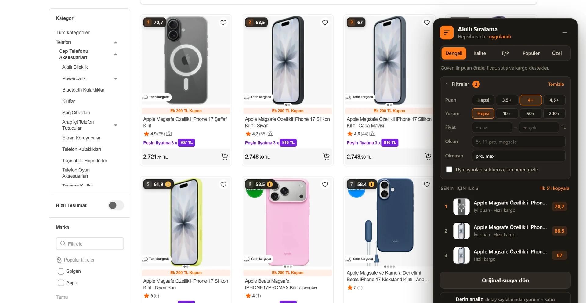
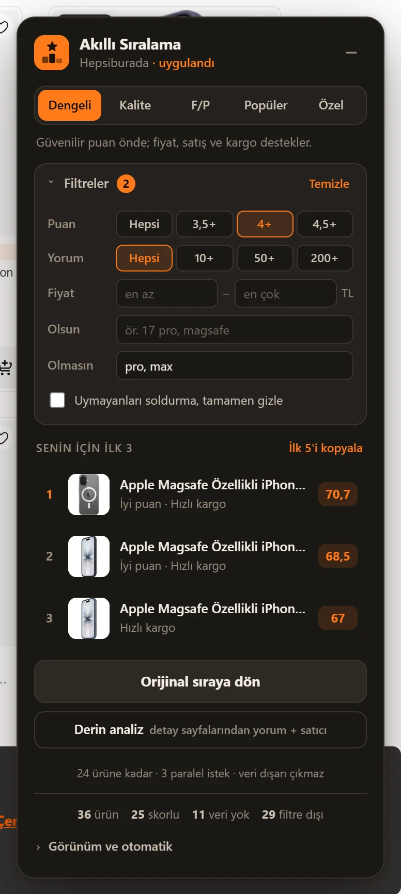

v3.0.1 Hepsiburada · Trendyol · Amazon TR
Tek yorumlu 5 yıldız, iki bin yorumlu 4,7'nin önüne geçmesin. Akıllı Ürün Sıralama; puanı, yorum sayısını, fiyatı, satışı ve kargoyu birlikte tartar, listeyi yeniden dizer ve her ürünün neden o sırada olduğunu gösterir.

Sorun
Puan, yorum sayısı olmadan bir şey söylemez. İki yorumun ortalaması şanstır; iki bin yorumun ortalaması kanıttır. Eklenti az yorumlu puanları genel ortalamaya doğru çeker, çok yorumlu puanları olduğu gibi bırakır.
Ayarlanmış puan: 4,25
İki kişinin beğenisi, ürün hakkında çok az şey söyler.
Ayarlanmış puan: 4,69
Binlerce kişi aynı şeyi söylüyor; bu puan gerçek.
Özellikler
Dengeli, Kalite, Fiyat/Performans, Popüler, ya da dört ekseni kaydırıcıyla kendin ayarladığın Özel mod.
Rozetin üstüne gel: kalite, fiyat, popülerlik ve kargo çubukları, kanıt gücü ve "sadece 2 yorum" gibi uyarılar.
Gezdikçe her ürünün fiyatını hatırlar: "12 günün en düşüğü", "3 gün önce 1.899 TL'ydi", "bu indirim şişirilmiş olabilir".
Minimum puan ve yorum, fiyat aralığı, başlıkta olsun/olmasın. "pro, max" yaz, yanlış model kılıfları gitsin.
İsteğe bağlı: ilk 24 ürünün detay sayfasından yorum metinlerini okur, Türkçe olumsuzluğu anlar ("sorunsuz" olumlu, "iyi değil" olumsuz).
En iyi beş ürün fiyatı, puanı ve linkiyle panoda. WhatsApp'a yapıştır, tartışma bitsin.


Alt+Shift+SModlar
| Mod | Ağırlık dağılımı | Ne zaman |
|---|---|---|
| Dengeli | Varsayılan. Güvenilir puan önde, gerisi destekler. | |
| Kalite | Uzun süre kullanacağın, bozulması can sıkacak şeyler. | |
| F/P | Kalite tabanı korunur, sayfadaki fiyata ve gerçek indirime yüklenir. | |
| Popüler | Herkesin aldığını görmek istediğinde. | |
| Özel | Dört kaydırıcı, senin önceliğin. |
Kurulum · 1 dakika
ZIP'i indir, kalıcı bir klasöre çıkar. Klasörü silersen eklenti de gider.
Adres çubuğuna chrome://extensions yaz. Edge'de edge://extensions.
Sağ üstteki Geliştirici modu anahtarını aç.
Paketlenmemiş öğe yükle → çıkardığın klasörü seç. Bir arama sayfası aç, panel sağ altta.
Doğrulama
30 Eylül 2026'da canlı arama sayfalarında, eklentinin okuduğu fiyat her kartta sitenin gösterdiği fiyatla tek tek karşılaştırıldı.
Hepsiburada kartında fiyat birebir doğru. "Ek 200 TL Kupon" ve "3 x 916 TL" taksit artık fiyat sanılmıyor.
Amazon TR kartında fiyat birebir doğru. Üstü çizili eski fiyat ve sponsorlu ürünler ayrı tanınıyor.
Bot koruması yüzünden otomatik testle doğrulanamadı. Destekleniyor ama fiyat seçicileri bilinen yapıdan yazıldı; hata görürsen bildir.
chrome.storage.local).Açık kaynak, ücretsiz, reklamsız.